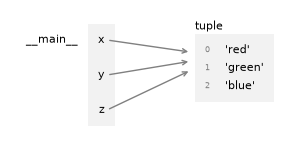
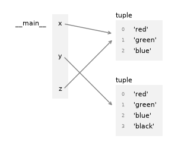
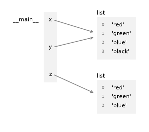

11d. Additions: Tuples Are Immutable#
Additions to Chapter 11: Tuples: what it means that tuples are immutable (“But tuples are immutable” in Chapter 11), shown with two variables that refer to the same tuple, a copy, and state diagrams. Read this page after the chapter. The practice questions at the end have answers: try each question first, then open its Answer.
Run the setup cell below first. It downloads thinkpython.py, which lets this page show the errors of some
examples without stopping the page, and diagram.py and yrdiagram.py, which draw the state diagrams.
from os.path import basename, exists
def download(url):
filename = basename(url)
if not exists(filename):
from urllib.request import urlretrieve
local, _ = urlretrieve(url, filename)
print("Downloaded " + str(local))
return filename
download('https://github.com/AllenDowney/ThinkPython/raw/v3/thinkpython.py');
download('https://github.com/AllenDowney/ThinkPython/raw/v3/diagram.py');
download('https://y-rosenthal.github.io/yrThinkPython/yrdiagram.py');
import thinkpython
y = x and a copy#
A tuple is a sequence like a list, but a program cannot change a tuple after it makes it. Make a tuple x, a
second variable y with y = x, and a third variable z with z = tuple(x). For a list, list(x) makes a
copy (Chapter 9). tuple(x) is the same idea for a tuple. The is operator tells whether two variables refer
to the same object (“Objects and values” in Chapter 9):
x = ('red', 'green', 'blue')
y = x
z = tuple(x)
print(x is y, x is z)
True True
Both are True: x, y and z refer to one tuple. y = x does not make a new tuple. And tuple(x) does
not make a copy either: it returns the same tuple, because a tuple cannot change, so a copy would never be
useful. The state diagram shows it:

How to read the diagram. It uses the notation of the book’s state diagrams and stack diagrams (Chapters 2,
3 and 9). The gray box on the left is the frame __main__: it holds the variables. Each arrow goes from a
variable to the object that it refers to. Two arrows that end at the same object mean that the two
variables refer to the same object. The diagram is drawn from the real variables: it runs the code above, and
uses is to find which variables refer to the same object.
Changing a tuple through y: not possible#
A tuple has no method that changes it (no append, no remove), and an assignment to an item is an error:
x = ('red', 'green', 'blue')
y = x
y[0] = 'pink'
TypeError: 'tuple' object does not support item assignment
The only thing that a program can do with y is to assign a new tuple to it. y + ('black',) makes a
new tuple, and the assignment makes y refer to it. (('black',) is a tuple with one item: Chapter 11
explains the comma.) x and z still refer to the old tuple:
x = ('red', 'green', 'blue')
y = x
z = tuple(x)
y = y + ('black',)
print('x:', x)
print('y:', y)
print('z:', z)
x: ('red', 'green', 'blue')
y: ('red', 'green', 'blue', 'black')
z: ('red', 'green', 'blue')

The tuple ('red', 'green', 'blue') did not change: no program can change it. So a change “through y” can never affect x
or z.
Compare with a list. With a list, the same steps give a different result: y.append('black') changes the one
list that x and y refer to, so x shows the change, and only the copy z does not
(“9b. Additions: Iterables, and Changing a List in a Loop”, “Lists are mutable”):
x = ['red', 'green', 'blue']
y = x
z = list(x)
y.append('black')
print('x:', x)
print('y:', y)
print('z:', z)
x: ['red', 'green', 'blue', 'black']
y: ['red', 'green', 'blue', 'black']
z: ['red', 'green', 'blue']

|
a copy: |
|
|
|---|---|---|---|
tuple (immutable) |
|
|
not possible: |
list (mutable) |
|
|
|
This is one reason to use a tuple: when a function gets a tuple, it cannot change it, so the caller’s values are safe.
Diving deeper: a tuple that contains a list
A tuple cannot change: it always refers to the same items. But if an item is a list, the list can change. Chapter 11 shows such a tuple in its “Exercises”, where it says that such a tuple is not hashable.
x = (['a', 'b'], ['c'])
y = x
y[0].append('d')
print(x) # (['a', 'b', 'd'], ['c'])
y[0] is the list ['a', 'b'], and append changes that list. The tuple still has the same two lists, so the
tuple did not change, but x shows the change in the list. y[0] = ['z'] is still an error: it tries to
change which object the tuple refers to.
Practice questions#
Question 1 (easy): what is displayed?#
Predict what this code displays. Then run the cell to check (on the website, click Show code cell output).
point = (3, 4)
other = point
copy = tuple(point)
print(point is other, point is copy, point == copy)
Answer
True True True
other = point does not make a new tuple. tuple(point) returns the same tuple, because a tuple cannot change.
So all three variables refer to one tuple, and == is True too.
Question 2 (medium): what is displayed?#
Predict what this code displays. Then run the cell to check (on the website, click Show code cell output).
a = (10, 20)
b = a
b = b + (30,)
c = [10, 20]
d = c
d.append(30)
print(a, b)
print(c, d)
Answer
(10, 20) (10, 20, 30)
[10, 20, 30] [10, 20, 30]
b + (30,) makes a new tuple, and b refers to it; the tuple of a does not change. c and d refer to one
list, and append changes that list, so c shows the change too.
Question 3 (medium): which lines cause an error?#
t = ('a', 'b', 'c'). Which of these lines cause an error? For each line that works, what is t after it?
t[1] = 'x't = t + ('d',)t.append('d')t = ('z',) + t[1:]
Answer
Error (
TypeError): an assignment to an item of a tuple.Works: it makes a new tuple and assigns it to
t.tis('a', 'b', 'c', 'd').Error (
AttributeError): a tuple has no methodappend.Works: a slice of a tuple is a tuple, and
+makes a new tuple.tis('z', 'b', 'c').
Lines 2 and 4 do not change the old tuple: they make a new one, and the assignment makes t refer to it.
Question 4 (hard): write a function#
Write a function called replace_first that takes a tuple and a value, and returns a new tuple that is the
same as the tuple, but with the value as its first item. For example, replace_first(('a', 'b', 'c'), 'z')
returns ('z', 'b', 'c'). For an empty tuple, the function returns the empty tuple: replace_first((), 'z')
returns ().
Start from this header (replace ... with the body):
def replace_first(t, value):
...
Answer
def replace_first(t, value):
if len(t) == 0:
return t
return (value,) + t[1:]
A tuple cannot change, so t[0] = value would be an error. The function makes a new tuple from a tuple with
one item, (value,), and the slice t[1:], which has all the items except the first one.
Credits#
Additions by Prof. Y. Rosenthal, for Think Python: 3rd Edition by Allen B. Downey. Text license: Creative Commons Attribution-NonCommercial-ShareAlike 4.0 International